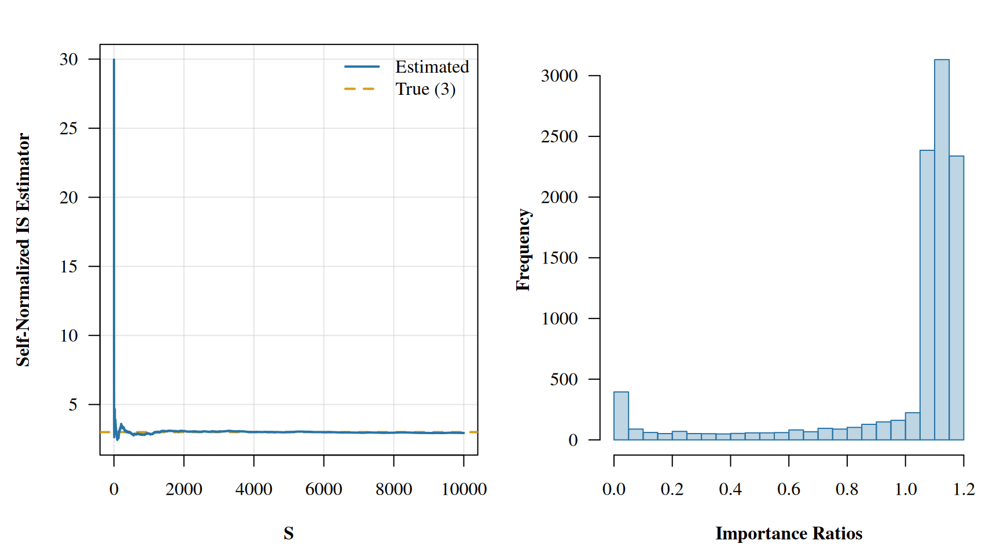
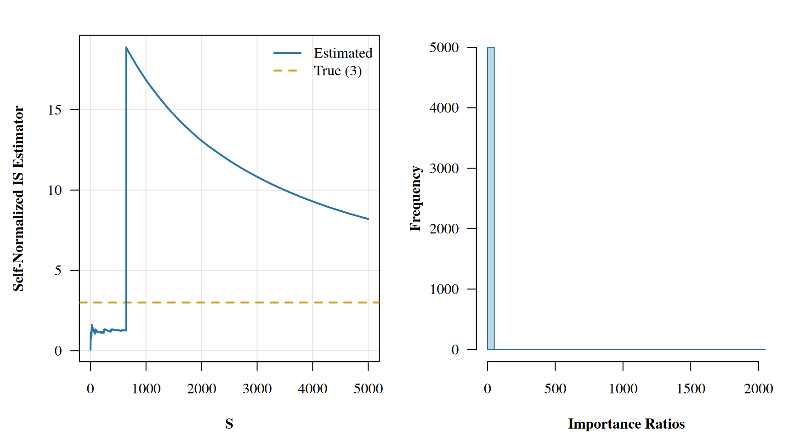
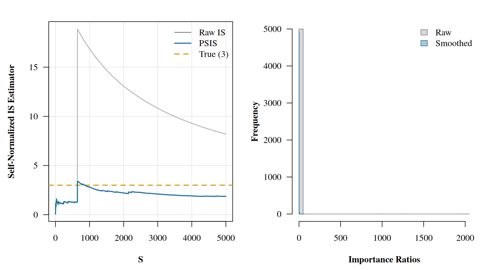

Pareto Smoothed Importance Sampling - Leave One Out Cross Validation from Scratch
Bayes
R
Stan
I didn’t believe the magic until I derived it for myself.
Published
June 19, 2026
Loo Who?
If you’re like me, when you first saw the loo package and all the accompanying research, you probably thought it was something close to magic. Coming from a traditional ML world, leave-one-out (loo) cross-validation (cv) is the gold standard for model checking and validation, but it is usually quite time consuming to do in practice.
To perform classiccal loo, you loop over your data set \(n\) times, where \(n\) is the number points in your data. For each iteration you remove or “hold out” \((X_i, y_i)\), where \(X\) and \(y\) are the covariates and response, respectively. The remaining data \((X_{-i}, y_{-i})\) is used to train the model. After training you predict using the held out covariate \(X_i\) to produce \(\tilde{y}_i\). Comparison can then be made between \(\tilde{y}_i\) and \(y_i\) using whichever error function fits your domain: MSE, accuracy, ELPD, etc.
Here is a short demo for linear regression with one covariate. We’ll perform loo and plot the absolute difference between \(\tilde{y}_i\) and \(y_i\):
An immediate result of this testing framework is that each point can be compared independent of the other. They are not batched into testing/training sets, each point is a predicted value where the model never got to see it during training. We can already start to see which points might be causing issues for the model or does not fit our data generating process. Another benefit that I’ll briefly show is how the coefficients of the \(n\) trained models differ. Thus showing how influential some points in the data might be.
Plot: Coefficient sensitivity
par(mar =c(4.5, 4.5, 1.5, 1), family ="serif", font.lab =2)plot(slope_pred, pch =21, ylab ='Slope Estimate', xlab ='Observation Left Out',bg =ifelse(diff >4, adjustcolor('#D4A017', 0.7), adjustcolor('grey40', 0.5)),col =ifelse(diff >4, '#D4A017', 'grey40'), cex =1.2, las =1,panel.first =grid(col =adjustcolor('grey80', 0.5), lty =1))abline(h =coef(lm(resp ~ co, data = data))[2], lty =2, col ='#2874A6', lwd =2)legend('bottomleft', lty =2, col ='#2874A6', lwd =2, bty ='n',legend ='Full-data slope')
Some Important Samples
Alright, so we’ve tackled the latter half of the posts name. What about the first half? Well for that, we’ll have to split it in half as well and focus on importance sampling first. At its heart, importance sampling is just a way to evaluate pesky integrals. Consider the following expectation.
For vanilla importance sampling we could draw \(S\) samples of \(\theta\) from \(\pi(\theta)\) and then take the average over all samples of the quantity \(\pi(\theta) \cdot f(\theta)\) to get an approximation of the above expectation. That is,
Now, let’s assume that we cannot draw samples directly from \(\pi(\theta)\), as is usually the case when attempting to draw samples from a complex posterior distribution. Instead, we can draw samples from \(\gamma(\theta)\), which nicely approximates \(\pi(\theta)\). We can then transform our integral to the following:
We call the quantity \(\frac{\pi(\theta)}{\gamma(\theta)}\) the importance ratio. The slight catch here is that above will only hold if both \(\pi\) and \(\gamma\) are normalized. If they are not, which is usually the case if we are approximating posteriors, then we need to employ the self-normalized estimator. That is, if \(r(\theta)= \pi(\theta)/\gamma(\theta)\) is an non-normalized importance ratio, then
is the self-normalized importance estimator of \(E_\gamma[r(\theta) f(\theta)]\).
Let’s show a quick example where \(\pi \sim N(0,1)\) and \(f(\theta) = \theta^4\). Clearly, \(\pi\) would be a dream to sample from, but we’ll assume that we left our normal sampler at home. We’ll instead use \(\gamma \sim t_{\nu=3}\) to sample from as an approximation to \(\pi\). Note that the \(t_3\) distribution has heavier tails than the normal, which is actually a good thing for importance sampling. Having a proposal with heavier tails ensures the importance ratios \(\pi/\gamma\) stay bounded, since the proposal never drops to zero faster than the target.
par(mfrow =c(1, 2), mar =c(4.5, 4.5, 2, 1), family ="serif", font.lab =2)plot(estimator, lwd =2, ylab ='Self-Normalized IS Estimator', xlab ='S', type ='n',las =1, panel.first =grid(col =adjustcolor('grey80', 0.5), lty =1))abline(h =3, col ='#D4A017', lwd =2, lty =2)lines(estimator, lwd =2, col ='#2874A6')legend('topright', legend =c('Estimated', 'True (3)'), lwd =2,col =c('#2874A6', '#D4A017'), lty =c(1, 2), bty ='n')hist(imp_ratios, col =adjustcolor('#2874A6', 0.3), border ='#2874A6',xlab ='Importance Ratios', main ='', ylab ='Frequency', breaks =30, las =1)

From the properties of the normal distribution, we know that we are just estimating \(E[\theta^4]\) with respect to the normal distribution. The answer of course is just given by the 4th central moment: \(3\sigma^2\). Notice how all the importance ratios are bounded near 1. That’s the hallmark of a good proposal: its tails are at least as heavy as the target’s, so no single draw dominates the sum.
So we have our estimator, but there are still questions that we’ve swept under the rug. For one, how many iterations should we have run our sampler for, and does \(\gamma\) really approximate \(\pi\) well enough. For a little motivation let’s flip the setup. Suppose now our target is the heavy-tailed \(t_3\) distribution and we want to estimate \(E_{t_3}[\theta^2]\). The true answer is \(\nu/(\nu-2) = 3\) for \(\nu=3\). But this time we’ll use the standard normal \(\gamma = N(0,1)\) as our proposal, which has lighter tails than the target.
Plot: Bad importance sampling
set.seed(6)theta_samples <-rnorm(5000)log_ratios <-dt(theta_samples, df =3, log =TRUE) -dnorm(theta_samples, log =TRUE)imp_ratios <-exp(log_ratios)f <- theta_samples^2estimator <-cumsum(imp_ratios * f) /cumsum(imp_ratios)par(mfrow =c(1, 2), mar =c(4.5, 4.5, 2, 1), family ="serif", font.lab =2)plot(estimator, lwd =2, ylab ='Self-Normalized IS Estimator', xlab ='S', type ='n',las =1, panel.first =grid(col =adjustcolor('grey80', 0.5), lty =1))abline(h =3, col ='#D4A017', lwd =2, lty =2)lines(estimator, lwd =2, col ='#2874A6')legend('topright', legend =c('Estimated', 'True (3)'), lwd =2,col =c('#2874A6', '#D4A017'), lty =c(1, 2), bty ='n')hist(imp_ratios, col =adjustcolor('#2874A6', 0.3), border ='#2874A6',xlab ='Importance Ratios', main ='', ylab ='Frequency', breaks =40, las =1)

Wow! Look at that spike in the running average. A single draw happened to land out in the tail where the \(t_3\) density is much larger than the normal density, producing an enormous importance ratio that jerks the entire estimate upward. And look at the histogram of ratios: a long right tail with a few extreme values. But there are no warnings, nothing yelled at us for the poorly estimated value. How can we critique the sampler as well as our chosen \(\gamma\) distribution? The key is in the importance ratios. Notice how in the first experiment the histogram of importance ratios is concentrated near 1, while in this second experiment we see a heavy right tail. This is a property we would like to be able to enforce, as well as detect. An early method for controlling the importance rations \(r(\theta)\) was to truncate at some maximum value. In particular Ionides (2008) defined \(w(\theta_s)\) to be the truncated importance weights as:
where \(\bar{r}\) is the average importance ratio over all samples \(S\). While this method does guarantee finite variance of the truncated importance ratios, it unfortunately incorporates a large bias. Another method given by Vehtari et al. (2024) to control the importance ratios is to fit a Pareto distribution to the tail of importance ratio distribution. This not only aids in giving the importance ratios finite variance while introducing little bias, but also allows us to use the parameters of the fit Pareto distribution as diagnostics. The following definition for the Pareto distribution, as well as its motivation is defined with much greater detail in Vehtari et al. (2024). I will attempt to give a slimmed down version of their background with a little added history.
Pareto Mentality
You might have heard of the 80/20 “rule” before. Usually in the context of sales: 20% of customers make up 80% of sales. It’s a powerful rule of thumb that more often than not comes out roughly correct. This rule, also known as the Pareto principle, is named after the Italian sociologist and economist Vilfredo Pareto, for which the Parteo distribution is also named after.
The Pareto distribution, as one might expect after learning about the 80/20 rule, is a simple power law. It is usually characterized by one parameter and is useful for fitting tails of distributions. For our use case, we will instead be using the generalized Pareto distribution which has been shown by Pickands (1975) and Balkema and Haan (1974) to well approximate the tail of the importance ratios \(r(\theta) | r(\theta) > u\) for some set tail lower bound \(u\). The PDF for the generalized Pareto is given by:
\[
p(y|u,\sigma,k)=
\begin{cases}
\frac{1}{\sigma} (1 + k (\frac{y-u}{\sigma}))^{-\frac{1}{k}-1} & k\neq 0 \\
\frac{1}{\sigma}\exp(\frac{y-u}{\sigma}) & k=0 \\
\end{cases}
\] where \(u\) is the aforementioned lower bound on the tail, \(\sigma\) is the positive scale parameter, and \(k\) is the very important shape parameter. The inputs distribution is further restricted to \(y\in[u,\inf)\). The inverse of our parameter \(k\) tells us how many moments exist in the distribution. Recall that if a distributions first moment exists then it has a mean1, and if it has a second moment then its variance is defined. You might see where I am going with this - we can use \(k\) after fitting our generalized Pareto to the importance ratios’ tail as a sort of diagnostic. If \(k\) is in an acceptable range, we can feel comfortable using the Pareto fit for the tails of our importance samples.
The question of fit is not an easy one though. There have been numerous papers that build upon each other, but we will climb to the top of the Giant stack2 for this one. Our method today comes from Zhang and Stephens (2009). It has a base of maximum likelihood, with a side of empirical Bayes, and a sprinkle of quadrature estimation for garnish. Overall a hearty meal!
It is shown by Vehtari et al. (2024) that for \(k < 0.5\), the variance of the importance weights is finite and the central limit theorem holds, meaning our estimates will be reliable with enough samples. For \(0.5 \leq k < 0.7\), the variance is infinite but the mean still exists, so convergence is slower but generally still workable. For \(k \geq 0.7\), neither the mean nor variance is guaranteed to be finite, and our importance sampling estimates should not be trusted. This simple three-tier diagnostic is one of the great gifts of the PSIS framework: fit the generalized Pareto to the tail of \(r(\theta)\), check \(\hat{k}\), and you instantly know whether your importance sampling is behaving.
But \(\hat{k}\) is not just a diagnostic. The Pareto fit also fixes the importance ratios. Let’s see how.
Smoothing Things Over
The “smoothed” in Pareto Smoothed Importance Sampling refers to replacing the largest importance ratios with the expected values of the order statistics from the fitted generalized Pareto distribution. Think of it as taking the noisy, unstable tail of our importance ratio distribution and swapping it out for a well-behaved parametric approximation. In practice, we define the number of tail samples \(M = \min(S/5, 3\sqrt{S})\) where \(S\) is the total number of draws.
Here is the PSIS procedure:
Compute the importance ratios \(r(\theta_s)\) for \(s = 1, \ldots, S\)
Sort them in increasing order
Take the \(M\) largest values and fit the generalized Pareto distribution to them (using the method described in the Appendix)
Replace those \(M\) values with the expected values of the order statistics from the fitted distribution
Truncate the smoothed ratios at a maximum value of \(S^{3/4}\) to maintain stability
The intuition here is that the largest importance ratios are the noisiest. They are driven by a handful of extreme draws from \(\gamma(\theta)\) that happened to land far out in the tails. By replacing them with their expected values under the fitted Pareto, we reduce variance while introducing only a small amount of bias. The details of the fitting procedure are in the Appendix if you want to follow the derivation through to its conclusion.
Let’s revisit our earlier troublesome example where \(\gamma = N(0,1)\) and \(\pi = t_3\) and see what happens when we apply Pareto smoothing. Recall that the raw IS estimate was jerked upward by a single extreme importance ratio. PSIS will fit a generalized Pareto to the tail of those ratios, replace them with well-behaved expected order statistics, and give us a \(\hat{k}\) diagnostic in the process.
NoteImplementation note: practical heuristics in fit_gpd_tail
The function below follows the loo package’s implementation rather than the textbook Zhang and Stephens procedure verbatim. There are several practical heuristics at play that deviate from the pure derivation in the Appendix:
Log-space shifted arithmetic: We subtract the max log-weight before exponentiating to avoid overflow, then compute exceedances on the exponentiated scale (exp(tail) - exp(cutoff)) rather than working with raw ratios directly.
Modified grid construction: Instead of the original order-statistic based grid from Zhang and Stephens (\(\theta_j\) built from spacings of sorted data), the loo package uses a simpler formula anchored at the upper quartile of exceedances: \(\theta_j = 1/x_{(N)} + (1 - \sqrt{m/(j-0.5)}) / 3 x^*\) where \(x^* = x_{(\lfloor N/4 \rfloor)}\). This is more robust to heavily skewed tails.
Weakly informative prior on k: After estimation, \(k\) is shrunk toward 0.5 via \(\hat{k}_{\text{adj}} = \hat{k} \cdot N/(N+10) + 0.5 \cdot 10/(N+10)\). This stabilizes the diagnostic when the tail sample is small.
Quantile replacement on the exponentiated scale: Smoothed tail values are GPD quantiles added to the exponentiated cutoff, then log-transformed back to the shifted log-weight scale.
These deviations reflect years of practical refinement and are necessary to match the loo package’s output. The Appendix gives the clean theory, but the code below gives the battle-tested version.
Code
# Helper function to fit GPD and return smoothed weightsfit_gpd_tail <-function(ratios) { S <-length(ratios) M <-min(floor(0.2* S), 3*floor(sqrt(S)))# Work with shifted log weights for numerical stability lw <-log(ratios) lw_max <-max(lw) lw <- lw - lw_max# Sort and find cutoff ord <-order(lw) cutoff <- lw[ord[S - M]] tail_ids <- ord[(S - M +1):S] lw_tail <- lw[tail_ids]# Exceedances on exp scale (as the loo package does) exp_cutoff <-exp(cutoff) exc <-exp(lw_tail) - exp_cutoff# Zhang and Stephens GPD fit x <-sort(exc) N <-length(x) prior <-3 m <-30+floor(sqrt(N))# Grid of theta values (improved construction from loo package) xstar <- x[floor(N /4+0.5)] theta_grid <-1/ x[N] + (1-sqrt(m / (seq_len(m) -0.5))) / prior / xstar# Profile log-likelihood for each theta l_theta <- N *sapply(theta_grid, function(th) { k_val <-mean(log1p(-th * x))log(-th / k_val) - k_val -1 })# Posterior weights and estimate of theta l_theta <- l_theta -max(l_theta) w_theta <-exp(l_theta) /sum(exp(l_theta)) theta_hat <-sum(theta_grid * w_theta) k <-mean(log1p(-theta_hat * x)) sigma <--k / theta_hat# Weakly informative prior adjustment (pulls k toward 0.5) k <- k * N / (N +10) +0.5*10/ (N +10)# Replace tail with GPD quantiles p <- (seq_len(M) -0.5) / Mif (abs(k) >1e-6) { qq <- exp_cutoff + sigma / k * ((1- p)^(-k) -1) } else { qq <- exp_cutoff - sigma *log(1- p) } smoothed_tail_lw <-log(qq)# Assign sorted quantiles to sorted tail positions smoothed_lw <- lw smoothed_lw[tail_ids[order(lw_tail)]] <-sort(smoothed_tail_lw)# Back to original scale and cap smoothed <-exp(smoothed_lw + lw_max) smoothed <-pmin(smoothed, S^(3/4))list(smoothed = smoothed, k = k, threshold = cutoff)}
Code
set.seed(6)theta_samples <-rnorm(5000)log_ratios <-dt(theta_samples, df =3, log =TRUE) -dnorm(theta_samples, log =TRUE)imp_ratios <-exp(log_ratios)f <- theta_samples^2# Apply PSISpsis_result <-fit_gpd_tail(imp_ratios)smoothed_ratios <- psis_result$smoothedcat(sprintf(paste0("--- PSIS Diagnostics ---\n"," k-hat: %.3f (%s)\n\n","--- Estimates ---\n"," Raw IS: %.3f\n"," PSIS: %.3f\n"," True: 3.000\n\n","--- Weight Summary ---\n"," Max raw weight: %.1f\n"," Max smoothed weight: %.1f\n"), psis_result$k,ifelse(psis_result$k <0.5, "Good: finite variance, CLT holds",ifelse(psis_result$k <0.7, "Marginal: infinite variance, finite mean","Caution: mean may not exist")),sum(imp_ratios * f) /sum(imp_ratios),sum(smoothed_ratios * f) /sum(smoothed_ratios),max(imp_ratios),max(smoothed_ratios)))
--- PSIS Diagnostics ---
k-hat: 0.732 (Caution: mean may not exist)
--- Estimates ---
Raw IS: 8.199
PSIS: 1.867
True: 3.000
--- Weight Summary ---
Max raw weight: 2015.9
Max smoothed weight: 62.4
Plot: PSIS smoothing comparison
raw_estimator <-cumsum(imp_ratios * f) /cumsum(imp_ratios)smoothed_estimator <-cumsum(smoothed_ratios * f) /cumsum(smoothed_ratios)par(mfrow =c(1, 2), mar =c(4.5, 4.5, 2, 1), family ="serif", font.lab =2)# Left panel: convergenceplot(raw_estimator, lwd =1.5, ylab ='Self-Normalized IS Estimator', xlab ='S',type ='n', ylim =range(c(raw_estimator, smoothed_estimator, 3)),las =1, panel.first =grid(col =adjustcolor('grey80', 0.5), lty =1))abline(h =3, col ='#D4A017', lwd =2, lty =2)lines(raw_estimator, lwd =1.5, col =adjustcolor('grey50', 0.6))lines(smoothed_estimator, lwd =2, col ='#2874A6')legend('topright', legend =c('Raw IS', 'PSIS', 'True (3)'),lwd =c(1.5, 2, 2), col =c('grey50', '#2874A6', '#D4A017'),lty =c(1, 1, 2), bty ='n')# Right panel: importance ratio distributionshist(imp_ratios, col =adjustcolor('grey50', 0.3), border ='grey50',xlab ='Importance Ratios', main ='', ylab ='Frequency', breaks =40, las =1)hist(smoothed_ratios, col =adjustcolor('#2874A6', 0.4), border ='#2874A6',add =TRUE, breaks =40)legend('topright', fill =c(adjustcolor('grey50', 0.3), adjustcolor('#2874A6', 0.4)),border =c('grey50', '#2874A6'), legend =c('Raw', 'Smoothed'), bty ='n')

Look at that left panel. The raw IS estimate (grey) has a dramatic spike around draw 644 where a single extreme weight dominates. The PSIS estimate (blue) smooths right through it. On the right, the histogram shows how the extreme tail of the raw weights has been replaced with well-behaved Pareto order statistics. The raw maximum weight was over 2000, while after smoothing it drops to around 60. That single dominant weight was responsible for the spike in the running average, and PSIS identified it and tamed it.
The \(\hat{k}\) diagnostic is in the “caution” zone, telling us that while the smoothing helped substantially, we should still be careful with this proposal distribution. In practice, if you saw this \(\hat{k}\) value in a PSIS-LOO computation, it would mean the full posterior and the leave-one-out posterior disagree enough that the approximation is strained but potentially salvageable.
Coming Full Circle: PSIS-LOO
Now for the grand finale. We’ve built up all three ingredients: LOO cross-validation, importance sampling, and Pareto smoothing. Time to combine them.
Recall that in classical LOO, we refit the model \(n\) times. In the Bayesian setting, each refit means running MCMC again without observation \(i\). For complex models, this is wildly impractical. But importance sampling gives us a way out.
Suppose we have already fit our full Bayesian model and obtained \(S\) posterior draws \(\theta_1, \ldots, \theta_S\) from \(p(\theta | y)\). We want to approximate the leave-one-out predictive density for each observation:
We can treat the full posterior \(p(\theta | y)\) as our proposal distribution \(\gamma(\theta)\) and the leave-one-out posterior \(p(\theta | y_{-i})\) as our target \(\pi(\theta)\). The importance ratio for observation \(i\) becomes:
where in the last step we used the fact that observations are conditionally independent given \(\theta\), so \(p(y | \theta) = p(y_i | \theta) \cdot p(y_{-i} | \theta)\).
This is a really satisfying result. The importance ratio for LOO is just the inverse of the likelihood of the held-out observation evaluated at the posterior draw. We don’t need to refit anything. We already have all the likelihood values from fitting the full model!
Using the self-normalized importance estimator from earlier, the PSIS-LOO estimate of the leave-one-out predictive density for observation \(i\) is:
where \(w_i(\theta_s)\) are the Pareto smoothed importance weights derived from \(r_i(\theta_s) = 1/p(y_i | \theta_s)\).
Summing the log of these values over all observations gives us the expected log pointwise predictive density (ELPD), which is the primary model comparison metric:
And here is where all three ingredients come together. For each observation \(i\), we get a Pareto \(\hat{k}_i\) diagnostic from smoothing \(r_i\). Points where \(\hat{k}_i > 0.7\) are observations where the full posterior and the leave-one-out posterior strongly disagree. These are the influential observations, exactly the kind that classical LOO would also flag, but without needing to refit the model \(n\) times.
Seeing it in Practice
Let’s tie everything together with a proper example. We’ll fit a Bayesian linear regression using cmdstanr with the same data from the very beginning of the post.
Our manual estimates should track closely to the loo package results.3 The gold diagonal line shows perfect agreement.
Validating Our Implementation
Let’s go a step further and quantify just how close our from-scratch implementation is to the loo package. We’ll look at the correlation, max absolute difference, and overall ELPD sum for both methods.
Code
elpd_loo_pkg <- loo_result$pointwise[, "elpd_loo"]k_loo_pkg <- loo_result$diagnostics$pareto_kcat(sprintf(paste0("--- ELPD Comparison ---\n"," Manual total: %.2f\n"," loo package total: %.2f\n"," Correlation: %.6f\n"," Max |diff|: %.4f\n\n","--- Pareto k Comparison ---\n"," Correlation: %.6f\n"," Max |diff|: %.4f\n"),sum(elpd_manual), sum(elpd_loo_pkg),cor(elpd_manual, elpd_loo_pkg),max(abs(elpd_manual - elpd_loo_pkg)),cor(k_manual, k_loo_pkg),max(abs(k_manual - k_loo_pkg))))
--- ELPD Comparison ---
Manual total: -249.20
loo package total: -253.49
Correlation: 0.998518
Max |diff|: 2.5264
--- Pareto k Comparison ---
Correlation: 0.998998
Max |diff|: 0.0301
If you recall our very first plot from the classical LOO section, the influential points we identified there should line up with the high \(\hat{k}\) observations here. We used the same data generating process after all, complete with those pesky outliers at every 40th observation. The difference is that we only had to fit the model once.
Wrapping Up
We started with the brute force approach of classical LOO cross-validation, took a detour through importance sampling and the generalized Pareto distribution, and landed on PSIS-LOO: a method that gives us the benefits of LOO-CV from a single model fit. The Pareto \(\hat{k}\) diagnostic is the cherry on top,4 giving us observation-level reliability checks for free.
The loo package makes all of this turnkey in practice, but I think there is real value in understanding what is happening underneath. It builds intuition for when things go wrong (high \(\hat{k}\) values everywhere usually means your model is misspecified or your posterior is too far from the LOO posteriors) and why the suggested remedies (moment matching, resampling, or just refitting for those specific observations) work.
For further reading, Vehtari et al. (2024) is thorough and well written. Vehtari et al. (2016) gives practical guidance for model comparison using PSIS-LOO and WAIC. And of course, the Stan documentation for the loo package is always a reliable companion.
Appendix
Zhang and Stephens \(k\) esimation
One thing to note, in Vehtari et al. (2024) they take a slightly different parameterization than Zhang and Stephens (2009). For one, Zhang and Stephens (2009) sets the input \(x\) to be between \([0,\inf)\), they don’t use \(u\) for a lower bound. Second, Vehtari et al. (2024) replace \(k\) in Zhang and Stephens (2009) with \(-k\). I haven’t be able to find a great explanation as to why Aki and team did this, but my assumption would be that it aids in interpretation of the final output. Regardless, after making those changes, the PDF that Zhang and Stephens (2009) use is:
\[
p(y|u,\sigma,k)=
\begin{cases}
\frac{1}{\sigma} (1 - (\frac{k x}{\sigma}))^{\frac{1}{k}-1} & k\neq 0 \\
\frac{1}{\sigma}\exp(\frac{x}{\sigma}) & k=0 \\
\end{cases}
\] For our first step, we will find the estimating equations of the MLE for \((k,\sigma)\). We’ll also let \(\theta=\frac{k}{\sigma}\), which will help in the derivation. The log-likelihood function of \((\theta, k)\) is given by:
Notice, we now have \(\hat{k}\) in terms of \(\theta\). This means we can write our log-likelihood function fully in terms of \(\theta\) by letting \(l(\theta, k)= l(\theta, \hat{k}(\theta)) = l(\theta)\). Further notice that we simplify our original log-likelihood function down to
\[l(\theta) = n[\log(\theta/\hat{k}) + \hat{k} - 1]\] where we have let \(\hat{k}=\hat{k}(\theta)\) for clarity. Zhang and Stephens call the above the “profile log-likelihood”.
A logical question is to ask why we aren’t just finding \(\hat{\theta}\) from \(\frac{\partial l(\theta,k)}{\partial \theta}\) and getting an old fashioned MLE solution and calling it a day. The answer is that unfortunately we can really only solve this system of equations using numerical solutions, and those solutions tend to be complex. One way around this is to solve it in terms of Bayesian quadrature estimation where we define an empirical prior and do grid approximation for the posterior.
Good deal, let’s right down the expected value for \(\hat{\theta}\), taken with respect to the posterior:
\[\hat{\theta}=\frac{\int\theta\cdot\pi(\theta)L(\theta)d\theta}{\int\pi(\theta)L(\theta)d\theta}\] where \(\pi(\theta)\) is our empirical prior for \(\theta\) and \(L(\theta)\) is the “profile likelihood” function. That is, \(L(\theta) = \exp[l(\theta)]\).
In Zhang and Stephens (2009), the authors define an empirical prior for \(\theta\) by constructing a grid of candidate values. The key constraint is that \(\theta\) must be less than \(1/\max(x)\) for the log-likelihood to even be defined, since we need \(1 - x_i\theta > 0\) for all observations. They build \(m\) grid points \(\theta_1, \ldots, \theta_m\) where \(m = \lfloor \min(n/5, 20\sqrt{n}) \rfloor\) using the following formula:
where \(x_{(j)}\) denotes the \(j\)th order statistic. This formula looks like it drops out of the sky, so let’s unpack where it comes from.
The fundamental constraint on \(\theta\) is \(\theta < 1/x_{(n)}\), the reciprocal of the largest observation. Any \(\theta\) at or above this bound makes the log-likelihood blow up. So our grid must live in the interval \((0, 1/x_{(n)})\). The denominator in the formula achieves this: when \(j=1\), the second term is largest and pushes \(\theta_1\) furthest from the upper bound; as \(j\) grows, the second term shrinks toward zero and \(\theta_j\) approaches \(1/x_{(n)}\) from below.
The specific spacing comes from a quantile-matching heuristic. Zhang and Stephens note (Section 4 of their paper) that this grid was chosen so that the \(\theta_j\) values correspond roughly to method-of-moments estimates you would get if the “true” shape parameter were at various quantiles of the data. The order statistic \(x_{(\lceil n(1-(j-0.5)/m) \rceil)}\) selects a data point from the upper portion of the sample, and the spacing \(1/j\) creates a denser concentration of grid points near the upper bound where the profile likelihood tends to be most peaked. The authors arrived at this particular functional form through a combination of asymptotic analysis and numerical experimentation, verifying across a wide range of simulated GPD samples that it reliably places enough grid points in the high-likelihood region to produce accurate quadrature estimates. It is not derived from first principles in a closed-form sense; rather, it is a carefully tuned recipe that works well in practice.
The prior is then taken to be uniform over this grid. This reduces our integral to a simple weighted average:
The elegance of this approach is that it avoids the numerical pitfalls of directly maximizing the log-likelihood while keeping the computation fast. The grid approximation typically only needs on the order of \(m \approx 20\sqrt{n}\) evaluations, which is negligible for the sample sizes we encounter when fitting tails of importance ratios. For the curious, the fit_gpd_tail function we defined earlier implements exactly this procedure. Compare the grid construction and the posterior weighted estimate of \(\hat{\theta}\) with the equations above and you should see a direct correspondence.
References
Balkema, A. A., and L. de Haan. 1974. “Residual Life Time at Great Age.”The Annals of Probability 2 (5): 792–804. http://www.jstor.org/stable/2959306.
Ionides, Edward L. 2008. “Truncated Importance Sampling.”Journal of Computational and Graphical Statistics 17 (2): 295–311. http://www.jstor.org/stable/27594308.
Pickands, James. 1975. “Statistical Inference Using Extreme Order Statistics.”The Annals of Statistics 3 (1): 119–31. http://www.jstor.org/stable/2958083.
Vehtari, Aki, Andrew Gelman, and Jonah Gabry. 2016. “Practical Bayesian Model Evaluation Using Leave-One-Out Cross-Validation and WAIC.”Statistics and Computing 27 (5): 1413–32. https://doi.org/10.1007/s11222-016-9696-4.
Vehtari, Aki, Daniel Simpson, Andrew Gelman, Yuling Yao, and Jonah Gabry. 2024. Pareto Smoothed Importance Sampling. https://arxiv.org/abs/1507.02646.
Zhang, Jin, and Michael A. Stephens. 2009. “A New and Efficient Estimation Method for the Generalized Pareto Distribution.”Technometrics 51 (3): 316–25. http://www.jstor.org/stable/40586625.